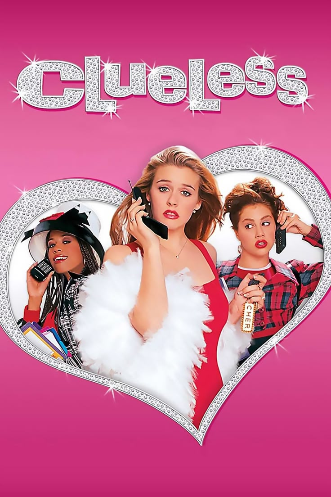
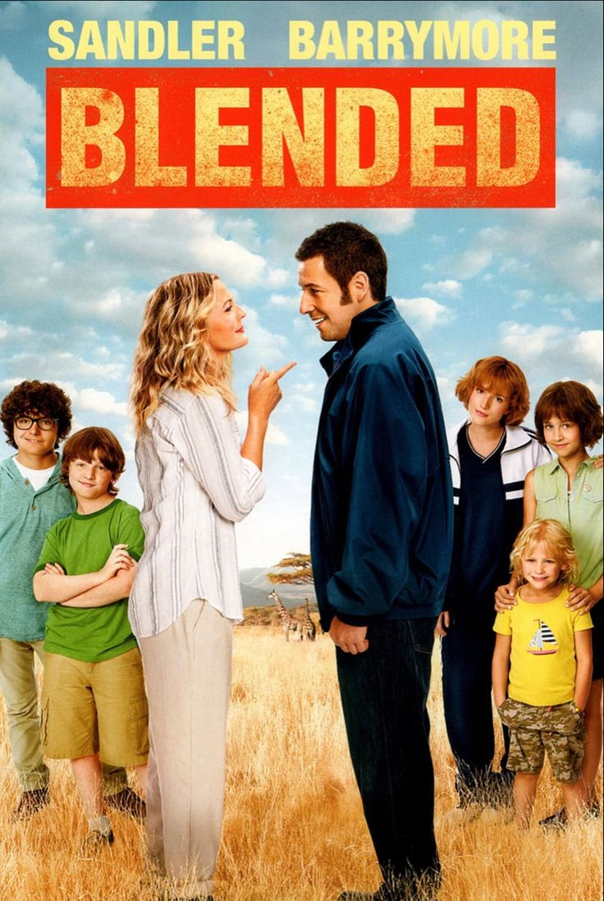
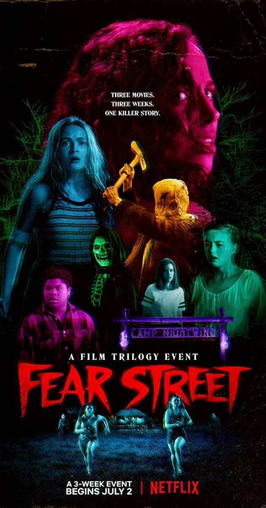
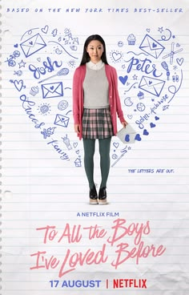
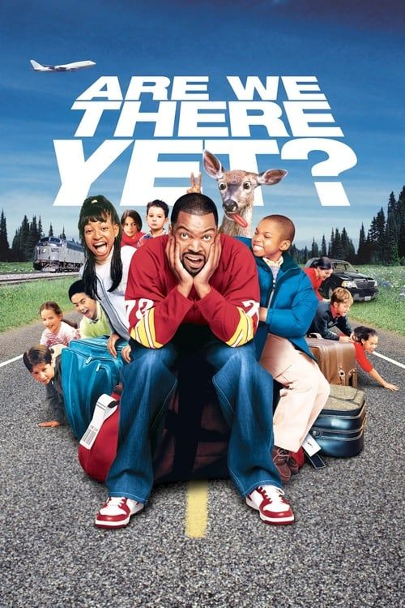

1. Clueless (1995)
It's a delightful comedy that perfectly captures the essence of teenage life in Beverly Hills.

It's a delightful comedy that perfectly captures the essence of teenage life in Beverly Hills.

It's a heartwarming family comedy that showcases the beauty of friendship and the importance of embracing change.

It's a thrilling horror film that masterfully blends mystery ,suspense and shows the essence of not judging a book by its cover.

It's a charming romantic comedy that beautifully portrays the complexities of teenage relationships.

It's a fun and engaging family comedy that keeps you entertained throughout and shows the importance of giving people second chances.
A collection of songs that match my mood and personality:
Listen on Spotify